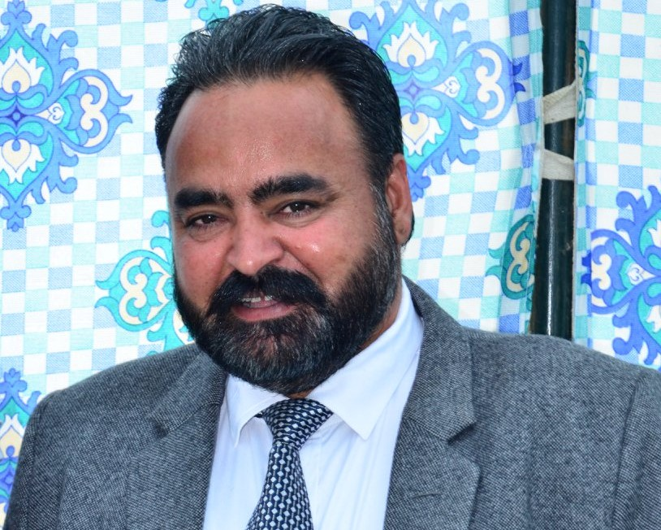

Principal's Message
Our school aims to form an auxiliary and inclusive setting wherever talented and gifted students are inspired to explore their potential and attain their personal best all told aspects of faculty life. Students are challenged and engaged through authentic learning opportunities that inspire them to develop creativity, confidence and resilience to become freelance and moral life-long learners.
We offer a broad course of study and a spread of opportunities for all our women to attain excellence in tutorial, creative, social, cultural, sporting and community endeavours. we tend to price cooperative learning, positive relationships and building capability amongst our students to effectively enable them to have interaction within the world of the long run, wherever drawback determination, evaluating, operating in groups, communication, making and innovating don't seem to be solely valued ideas, however expected skills, attributes and capabilities.
We support the individual upbeat of our women and supply a faculty setting that permits each student to thrive as they work towards achieving their personal best performance. We tend to set high expectations for our women and push to safeguard positive emotions across our faculty community. We tend to be partners in learning with our students and ask to deepen their information, give enriching and innovative learning experiences, whereas conjointly gently urging our students out of their temperature to aim for new challenges.

Chairman's Message
Education is regarding wakening –Awakening to the facility and sweetness that lies inside all
people.To my mind education as a concept, isn't almost about bricks ,mortar and concrete , however
regarding building character , enriching minds and regarding varied experiences that last a
lifespan.
I expect sincere cooperation from elders and guardians for the attainment of the school's objectives.
At our school there is a commitment to an integrated curriculum approach through inquiry learning. The development of higher order thinking skills, risk taking ,adaptability, cooperation, and communication techniques are fostered.
We provide a platform to students to showcase their inborn talents. We also take utmost care in molding our children as responsible global citizens.
Leave a comment